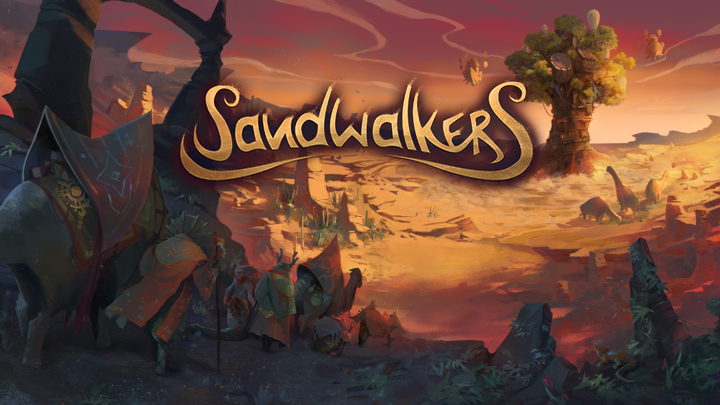
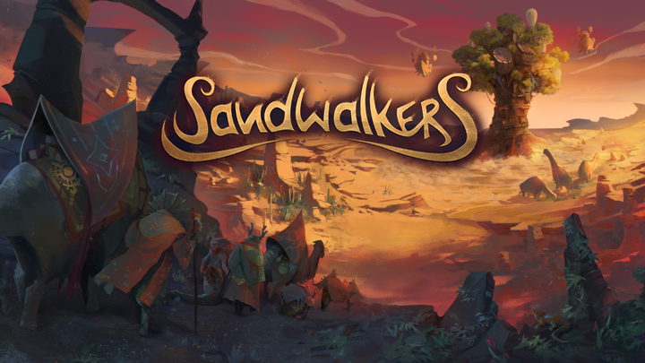

2022 Map editor Tool development GoblinzStudio Unity
During my internship at TavroxGames I had the occasion to work for a month and a half with GoblinzStudio on the game Sandwalkers. I first created a map editor which would help level designer to build complex levels easily and directly from the game.

The map editor allowed the user to create a map with the dimensions they prefered, showing or not the mountains that appear on the sides of the world in game. You could load and save your work, modify each cell's biome, generate the same environment for the whole map, put decorations, places, ennemies, point of interest... This tool made it possible to make a whole map without having to go through Unity's interface.
 

Later on, I started working on the game itself. First I helped to integrate a few tooltips, then I was given more difficult missions, such as bug solving and making up the entire end fight menu from a mockup.

It was pretty exciting working on a game like that, with lots of people, a community behind it and I can't wait to see the final experience with my own eyes !